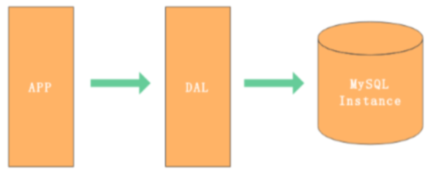
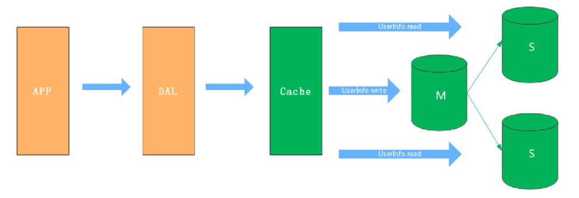
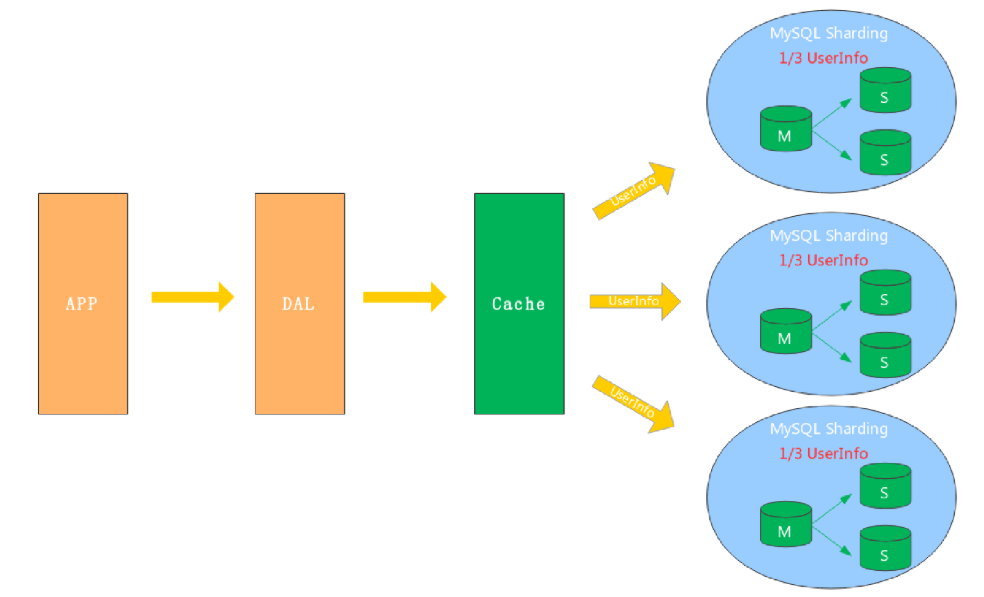
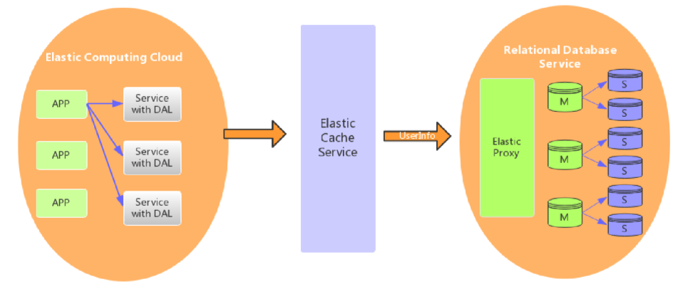
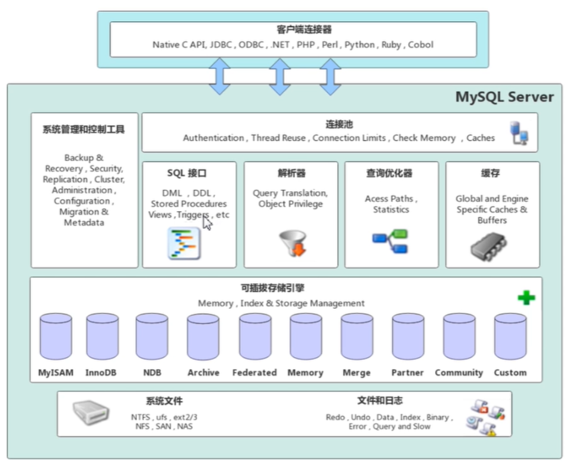
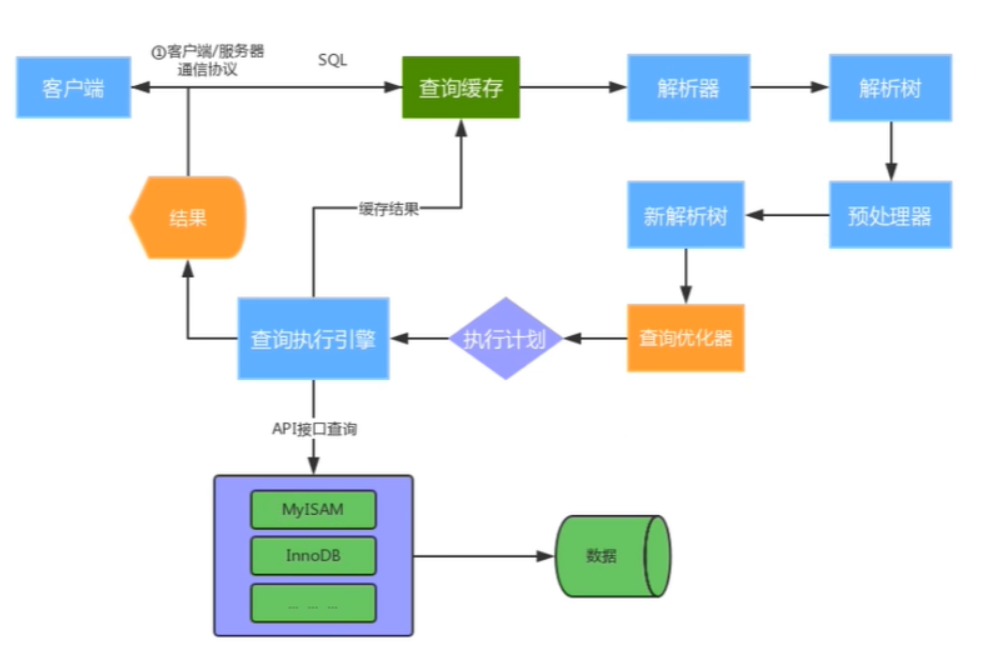
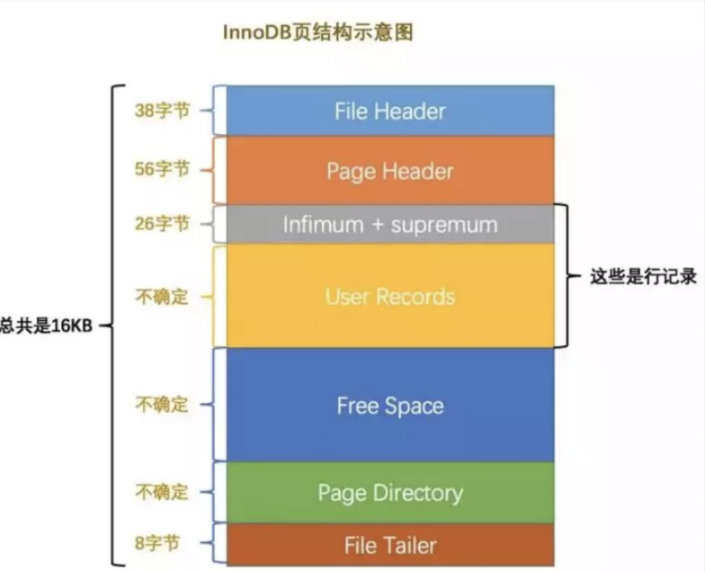
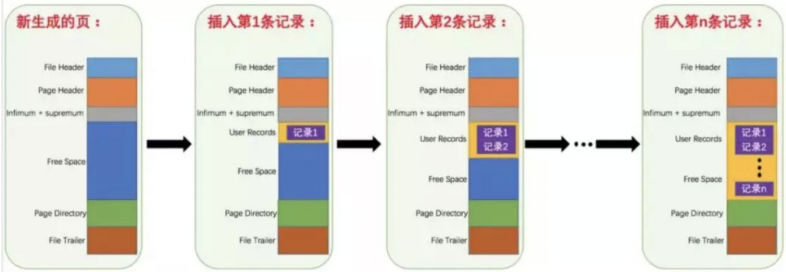
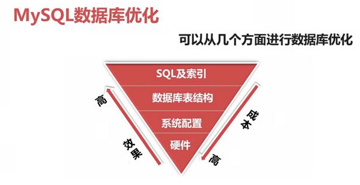
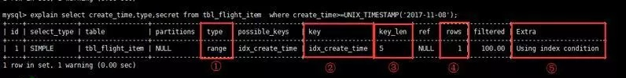

Welcome to yanliang's notes.
[TOC]
Mysql 应用架构演变
一个简单的网站架构一般包含以下几层
用户请求 –>应用层 –> 服务层 –> 存储层
- 用户请求–>应用层的优化：nginx + tomcat集群进行优化
- 应用层–>服务层的优化：分布式，微服务
- 服务层–>存储层：数据库存储及优化
网站在不同的并发访问量和数据量级下，MySQL应用架构的演变过程。
架构V1.0 - 单机单库
一个简单的网站或者应用，背后的架构可以非常简单，数据存储只需要一个MySQL Instance 就能满足数据读取和写入需求（这里忽略掉了数据备份的Instance），处于这个阶段的系统，一般会把所有的信息都存到一个MySQL Instance里面。
DAL （Data Access Layer）数据访问层
主要功能：负责数据库的访问。简单的说就是实现对数据表的CRUD

V1.0 瓶颈
- 数据量太大，超出一台服务器承受能力范围
- 读写数据量太大，超出一台服务器承受能力范围
- 可用性太差，一台服务器挂掉，应用也会挂掉
架构V2.0 - 主从架构
V2.0 架构主要解决架构V1.0下的高可用和读扩展问题，通过给Instance挂载从库解决读取的压力，主库宕机也可以通过主从切换保障高可用。在MySQL的场景下就是通过主从结构（爽主结构也属于特殊的主从结构），主库抗写压力，通过从库来分担读压力，对于写少读多的应用，V2.0主从架构完全能够胜任。

V2.0 瓶颈
- 数据量太大，超过一台服务器承受能力范围
- 写操作太多，超出一台服务器的承受能力范围
架构V3.0 - 分库分表
对于V1.0 和 V2.0遇到写入瓶颈和存储瓶颈时，可以通过水平拆分来解决，水平拆分和垂直拆分有较大的区别，垂直拆分完的结果，每个Instance都拥有完整的数据，而水平拆分之后，任何实例都只有全量的 1/n 的数据。下图所示，将UserInfo 拆分为3个Sharding，每个Sharding持有总量的 1/3数据，3个Sharding数据的总和等于一份完整数据。

V3.0架构的挑战
数据如何路由（分片）
- 范围拆分
- List 拆分
- Hash 拆分
数据库一致性
V4.0 云数据库
云数据库（云计算）现在是各大IT公司内部作为节约成本的一个突破口，对于数据存储的MySQL来说，如何让其成为Saas（Software as a Service）是关键点。MySQL作为一个Saas服务，服务提供商负责解决可配置性，可扩展性，多用户存储结构设计等这些疑难问题。

Mysql 基础架构

Mysql 体系架构
MySQL Server架构自顶向下大致可以分网络连接层、服务层、存储引擎层和系统文件层。
网络连接层
客户端连接器（Client Connectors）：提供与MySQL服务器建立的支持。目前几乎支持所有主流 的服务端编程技术，例如常见的 Java、C、Python、.NET等，它们通过各自API技术与MySQL建立链接
服务层（MySQL Server）
服务层是MySQL Server的核心，主要包含系统管理和控制工具、连接池、SQL接口、解析器、查询优 化器和缓存六个部分。
连接池（Connection Pool）：负责存储和管理客户端与数据库的连接，一个线程负责管理一个连接。
- Authentication 权限控制
- Thread Reuse 线程复用
- Connection Limits 连接数限制
- Check Memory 内存检查
- Caches 缓存
系统管理和控制工具（Management Services & Utilities）：例如备份恢复、安全管理、集群 管理等
SQL接口（SQL Interface）：用于接受客户端发送的各种SQL命令，并且返回用户需要查询的结果。比如DML、DDL、存储过程、视图、触发器等。
DML (Data Manipulation Language) 数据操纵语言。用户通过它可以实现对数据库的基本操作。
DDL
- 解析器（Parser）：负责将请求的SQL解析生成一个”解析树”。然后根据一些MySQL规则进一步检查解析树是否合法。
- 查询优化器（Optimizer）：当“解析树”通过解析器语法检查后，将交由优化器将其转化成执行计 划，然后与存储引擎交互。
select uid,name from user where gender=1;
选取 –> 投影 –> 联接 策略
1）select先根据where语句进行选取，并不是查询出全部数据再过滤
2）select查询根据uid和name进行属性投影，并不是取出所有字段
3）将前面选取和投影联接起来终生成查询结果
- 缓存（Cache&Buffer）： 缓存机制是由一系列小缓存组成的。比如表缓存，记录缓存，权限缓存，引擎缓存等。如果查询缓存有命中的查询结果，查询语句就可以直接去查询缓存中取数据。
存储引擎层
存储引擎负责MySQL中数据的存储与提取，与底层系统文件进行交互。MySQL存储引擎是插件式的， 服务器中的查询执行引擎通过接口与存储引擎进行通信，接口屏蔽了不同存储引擎之间的差异 。现在有 很多种存储引擎，各有各的特点，常见的是MyISAM和InnoDB。
系统文件层
该层负责将数据库的数据和日志存储在文件系统之上，并完成与存储引擎的交互，是文件的物理存储 层。主要包含日志文件，数据文件，配置文件，pid 文件，socket 文件等。
日志文件
错误日志（Error log）
- 默认开启，show variables like ‘%log_error%’
通用查询日志（General query log）
- 记录一般查询语句，show variables like ‘%general%’;
二进制日志（binary log）
- 记录了对MySQL数据库执行的更改操作，并且记录了语句的发生时间、执行时长；但是它不 记录select、show等不修改数据库的SQL。
- 主要用于数据库恢复和主从复制。
- show variables like ‘%log_bin%’; //是否开启
- show variables like ‘%binlog%’; //参数查看
- show binary logs;//查看日志文件
慢查询日志（Slow query log）
- 记录所有执行时间超时的查询SQL，默认是10秒。
- show variables like ‘%slow_query%’; //是否开启
- show variables like ‘%long_query_time%’; //时长
配置文件
- 用于存放MySQL所有的配置信息文件，比如my.cnf、my.ini等。
数据文件
- db.opt 文件：记录这个库的默认使用的字符集和校验规则。
- frm 文件：存储与表相关的元数据（meta）信息，包括表结构的定义信息等，每一张表都会 有一个frm 文件。
- MYD 文件：MyISAM 存储引擎专用，存放 MyISAM 表的数据（data)，每一张表都会有一个 .MYD 文件。
- MYI 文件：MyISAM 存储引擎专用，存放 MyISAM 表的索引相关信息，每一张 MyISAM 表对 应一个 .MYI 文件。
- ibd文件和 IBDATA 文件：存放 InnoDB 的数据文件（包括索引）。InnoDB 存储引擎有两种 表空间方式：独享表空间和共享表空间。独享表空间使用 .ibd 文件来存放数据，且每一张 InnoDB 表对应一个 .ibd 文件。共享表空间使用 .ibdata 文件，所有表共同使用一个（或多 个，自行配置）.ibdata 文件。
- ibdata1 文件：系统表空间数据文件，存储表元数据、Undo日志等 。
- ib_logfile0、ib_logfile1 文件：Redo log 日志文件。
pid 文件
- pid 文件是 mysqld 应用程序在 Unix/Linux 环境下的一个进程文件，和许多其他 Unix/Linux 服务 端程序一样，它存放着自己的进程 id。
socket 文件
- socket 文件也是在 Unix/Linux 环境下才有的，用户在 Unix/Linux 环境下客户端连接可以不通过 TCP/IP 网络而直接使用 Unix Socket 来连接 MySQL。
SQL 运行机制

①建立连接
（Connectors&Connection Pool），通过客户端/服务器通信协议与MySQL建立连 接。MySQL 客户端与服务端的通信方式是 “ 半双工 ”。对于每一个 MySQL 的连接，时刻都有一个 线程状态来标识这个连接正在做什么。
通讯机制：
双工：能同时发送和接收数据，例如平时打电话。
半双工：指的某一时刻，要么发送数据，要么接收数据，不能同时。例如早期对讲机
单工：只能发送数据或只能接收数据。例如单行道
线程状态：
show processlist; //查看用户正在运行的线程信息，root用户能查看所有线程，其他用户只能看自己的
id：线程ID，可以使用kill xx； user：启动这个线程的用户
Host：发送请求的客户端的IP和端口号
db：当前命令在哪个库执行
Command：该线程正在执行的操作命令
- Create DB：正在创建库操作
- Drop DB：正在删除库操作
- Execute：正在执行一个PreparedStatement
- Close Stmt：正在关闭一个PreparedStatement
- Query：正在执行一个语句
- Sleep：正在等待客户端发送语句
- Quit：正在退出
- Shutdown：正在关闭服务器
Time：表示该线程处于当前状态的时间，单位是秒
State：线程状态
- Updating：正在搜索匹配记录，进行修改
- Sleeping：正在等待客户端发送新请求
- Starting：正在执行请求处理
- Checking table：正在检查数据表
- Closing table : 正在将表中数据刷新到磁盘中
- Locked：被其他查询锁住了记录
- Sending Data：正在处理Select查询，同时将结果发送给客户端
Info：一般记录线程执行的语句，默认显示前100个字符。想查看完整的使用show full processlist;
②查询缓存
（Cache&Buffer），这是MySQL的一个可优化查询的地方，如果开启了查询缓存且在 查询缓存过程中查询到完全相同的SQL语句，则将查询结果直接返回给客户端；如果没有开启查询 缓存或者没有查询到完全相同的 SQL 语句则会由解析器进行语法语义解析，并生成“解析树”。
缓存Select查询的结果和SQL语句
执行Select查询时，先查询缓存，判断是否存在可用的记录集，要求是否完全相同（包括参数值），这样才会匹配缓存数据命中。
即使开启查询缓存，以下SQL也不能缓存
- 查询语句使用SQL_NO_CACHE
- 查询的结果大于query_cache_limit设置
- 查询中有一些不确定的参数，比如now()
show variables like ‘%query_cache%’; //查看查询缓存是否启用，空间大小，限制等
show status like ‘Qcache%’; //查看更详细的缓存参数，可用缓存空间，缓存块，缓存多少等
③解析器
（Parser）将客户端发送的SQL进行语法解析，生成”解析树”。预处理器根据一些MySQL 规则进一步检查“解析树”是否合法，例如这里将检查数据表和数据列是否存在，还会解析名字和别名，看看它们是否有歧义，后生成新的“解析树”。
④查询优化器
（Optimizer）根据“解析树”生成优的执行计划。MySQL使用很多优化策略生成 优的执行计划，可以分为两类：静态优化（编译时优化）、动态优化（运行时优化）。
等价变换策略
- 5=5 and a>5 改成 a > 5
- a < b and a=5 改成b>5 and a=5
- 基于联合索引，调整条件位置等
优化count、min、max等函数
- InnoDB引擎min函数只需要找索引左边
- InnoDB引擎max函数只需要找索引右边
- MyISAM引擎count(*)，不需要计算，直接返回
提前终止查询
- 使用了limit查询，获取limit所需的数据，就不在继续遍历后面数据
in的优化
- MySQL对in查询，会先进行排序，再采用二分法查找数据。比如where id in (2,1,3)，变 成 in (1,2,3)
⑤查询执行引擎负责执行 SQL 语句
此时查询执行引擎会根据 SQL 语句中表的存储引擎类型，以 及对应的API接口与底层存储引擎缓存或者物理文件的交互，得到查询结果并返回给客户端。若开 启用查询缓存，这时会将SQL 语句和结果完整地保存到查询缓存（Cache&Buffer）中，以后若有 相同的 SQL 语句执行则直接返回结果。
- 如果开启了查询缓存，先将查询结果做缓存操作
- 返回结果过多，采用增量模式返回
Mysql innodb 页结构


- 各个数据⻚可以组成⼀个双向链表
- ⽽每个数据⻚中的记录⼜可以组成⼀个单向链表
- 每个数据⻚都会为存储在它⾥边⼉的记录⽣成⼀个⻚⽬录，在通过主键查找某条记录的时候可 以在⻚⽬录中使⽤⼆分法快速定位到对应的槽，然后再遍历该槽对应分组中的记录即可快速找 到指定的记录
- 以其他列(⾮主键)作为搜索条件：只能从最⼩记录开始依次遍历单链表中的每条记录。
所以说，如果我们写 select * from user where username=’zhangsan’ 这样没有进⾏任何优化的sql语句，默认 会这样做：
- 定位到记录所在的⻚ 需要遍历双向链表，
- 找到所在的⻚ 从所在的⻚内中查找相应的记录
- 由于不是根据主键查询，只能遍历所在⻚的单链表了
很明显，在数据量很⼤的情况下这样查找会很慢！看起来跟回表有点点像。
Mysql 慢查询
Mysql 什么情况会造成慢查？
https://www.infoq.cn/article/xw54gb1oe6fpxiggch19
https://blog.csdn.net/qq_39390545/article/details/109253328
网络层面
- 网络丢包、重传等
- 网卡满（传输大字段），网络链路变长
IO
- 磁盘IO被其他任务占用
- raid 卡 充放电，raid 卡重置
数据库层面
- 没有索引，或者没有正确使用索引
- 隐式转换（发生隐式转换时，MySQL 选择执行计划并不能利用到合适的索引而是选择全表扫描导致慢查询。）
- 数据量大（符合条件的记录数太多）
- 数据分布不均匀
- 表结构设计不合理
- innodb 刷脏页
- undo 没有被 purge/回收
大库 DDL 操作
https://blog.csdn.net/frog4/article/details/82702745
Mysql 优化
数据库优化维度有四个：
硬件、系统配置、数据库表结构、SQL及索引。

数据库层面问题解决思路？
一般应急调优的思路：针对突然的业务办理卡顿，无法进行正常的业务处理，需要立马解决的场景。
1）show processlist；
2）explain select id ,name from stu where name=’clsn’; # ALL id name age sex；
select id,name from stu where id=2-1 函数 结果集>30；show index from table；
3）通过执行计划判断，索引问题（有没有、合不合理）或者语句本身问题；
4）show status like ‘%lock%’; # 查询锁状态
kill SESSION_ID; # 杀掉有问题的session。
常规调优思路：针对业务周期性的卡顿，例如在每天10-11点业务特别慢，但是还能够使用，过了这段时间就好了。
1）查看slowlog，分析slowlog，分析出查询慢的语句；
2）按照一定优先级，一个一个排查所有慢语句；
3）分析top SQL，进行explain调试，查看语句执行时间；
4）调整索引或语句本身。
数据库优化方向
SQL优化方向：执行计划、索引、SQL改写。
做MySQL SQL 优化，我们要善用 EXPLAIN 查看SQL执行计划。
1 | explain select xxx from table_name; |

- type列，连接类型。一个好的sql语句至少要达到range级别。杜绝出现all级别
- key列，使用到的索引名。如果没有选择索引，值是NULL。可以采取强制索引方式
- key_len列，索引长度
- rows列，扫描行数。该值是个预估值
- extra列，详细说明。注意常见的不太友好的值有：Using filesort, Using temporary
一些SQL优化建议
https://www.cnblogs.com/wcwen1990/p/7204739.html
SQL语句不要写的太复杂
一个SQL语句要尽量简单，不要嵌套太多层。
使用『临时表』缓存中间结果
简化SQL语句的重要方法就是采用临时表暂存中间结果，这样可以避免程序中多次扫描主表，也大大减少了阻塞，提高了并发性能。
使用like的时候要注意是否会导致全表扫
有的时候会需要进行一些模糊查询比如
select id from table where username like ‘%hollis%’
关键词%hollis%，由于hollis前面用到了“%”，因此该查询会使用全表扫描，除非必要，否则不要在关键词前加%，
尽量避免使用!=或<>操作符
在where语句中使用!=或<>，引擎将放弃使用索引而进行全表扫描。
尽量避免使用 or 来连接条件
在 where 子句中使用 or 来连接条件，引擎将放弃使用索引而进行全表扫描
尽量避免使用表达式、函数等操作作为查询条件
尽量避免大事务操作，提高系统并发能力
尽量避免使用游标
尽量避免使用in和not in
任何地方都不要使用 select * from t ，用具体的字段列表代替“*”，不要返回用不到的任何字段。
尽可能的使用 varchar/nvarchar 代替 char/nchar
尽量使用数字型字段，若只含数值信息的字段尽量不要设计为字符型，这会降低查询和连接的性能，并会增加存储开销。
索引并不是越多越好，索引固然可以提高相应的 select 的效率，但同时也降低了 insert 及 update 的效率
并不是所有索引对查询都有效，SQL是根据表中数据来进行查询优化的，当索引列有大量数据重复时，SQL查询可能不会去利用索引
SQL语句中IN包含的值不应过多
MySQL对于IN做了相应的优化，即将IN中的常量全部存储在一个数组里面，而且这个数组是排好序的。但是如果数值较多，产生的消耗也是比较大的。再例如：select id from t where num in(1,2,3) 对于连续的数值，能用 between 就不要用 in 了；再或者使用连接来替换。
SELECT语句务必指明字段名称
SELECT *增加很多不必要的消耗（cpu、io、内存、网络带宽）；增加了使用覆盖索引的可能性；当表结构发生改变时，前断也需要更新。所以要求直接在select后面接上字段名。
当只需要一条数据的时候，使用limit 1
这是为了使EXPLAIN中type列达到const类型
如果排序字段没有用到索引，就尽量少排序
如果限制条件中其他字段没有索引，尽量少用or
or两边的字段中，如果有一个不是索引字段，而其他条件也不是索引字段，会造成该查询不走索引的情况。很多时候使用 union all 或者是union(必要的时候)的方式来代替“or”会得到更好的效果
尽量用union all代替union
union和union all的差异主要是前者需要将结果集合并后再进行唯一性过滤操作，这就会涉及到排序，增加大量的CPU运算，加大资源消耗及延迟。当然，union all的前提条件是两个结果集没有重复数据。
不使用ORDER BY RAND()
select id from dynamic order by rand() limit 1000;
上面的sql语句，可优化为
select id from dynamic t1 join (select rand() * (select max(id) from dynamic) as nid) t2 on t1.id > t2.nidlimit 1000;
分段查询
在一些用户选择页面中，可能一些用户选择的时间范围过大，造成查询缓慢。主要的原因是扫描行数过多。这个时候可以通过程序，分段进行查询，循环遍历，将结果合并处理进行展示。
避免在 where 子句中对字段进行 null 值判断
对于null的判断会导致引擎放弃使用索引而进行全表扫描。
不建议使用%前缀模糊查询
例如LIKE “%name”或者LIKE “%name%”，这种查询会导致索引失效而进行全表扫描。但是可以使用LIKE “name%”。
使用全文索引来查询 “%name”
避免在where子句中对字段进行表达式操作
select user_id,user_project from user_base where age*2=36;
中对字段就行了算术运算，这会造成引擎放弃使用索引，建议改成
select user_id,user_project from user_base where age=36/2;
对于联合索引来说，要遵守最左前缀法则
必要时可以使用force index来强制查询走某个索引